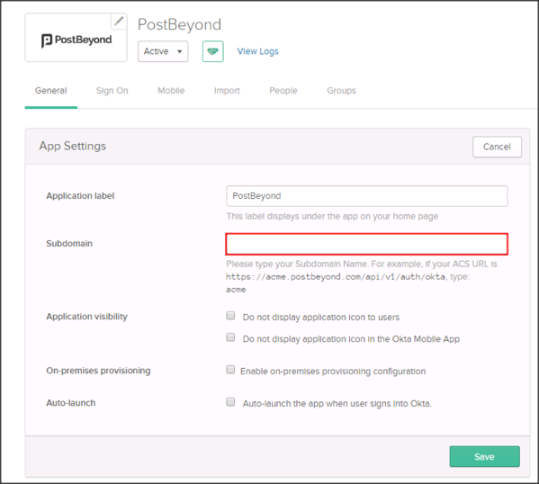

Contact the PostBeyond Support team and request that they enable SAML 2.0 for your account.
Attach the following IDP Metadata URL:
Sign into the Okta Admin dashboard to generate this value.
The PostBeyond Support team will process your request and will provide you with their URL in the following format:
https://[your-postbeyond-subdomain].postbeyond.com
Enter the subdomain provided to you by PostBeyond ([your-postbeyond-subdomain]) into the Subdomain field.
Click Save

Notes:
IDP-initiated flows are supported.
SP-initiated flows and Just In Time (JIT) Provisioning are not supported.